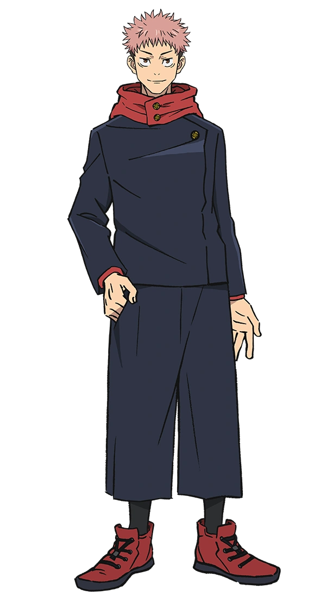
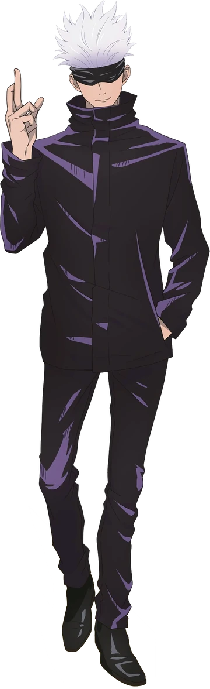
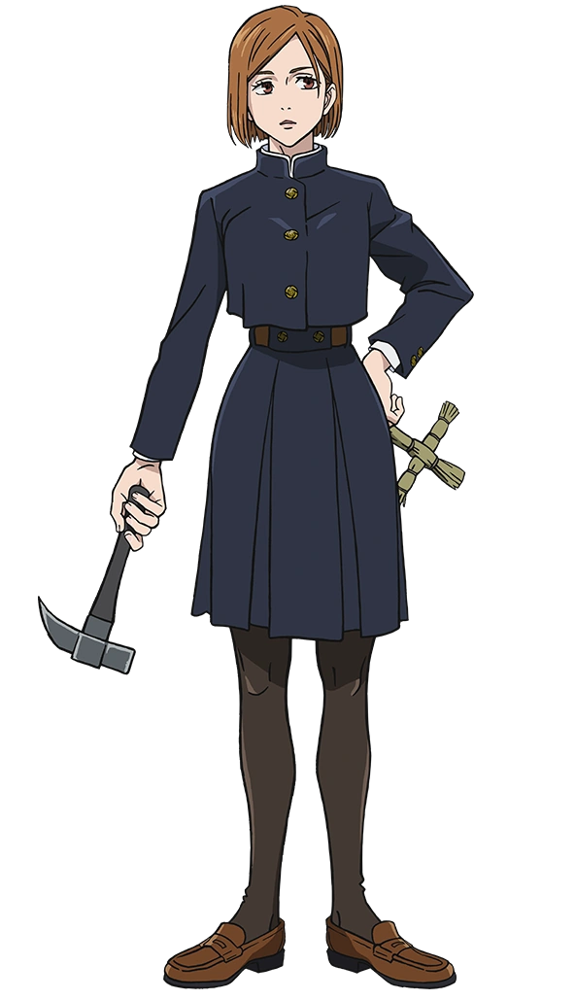
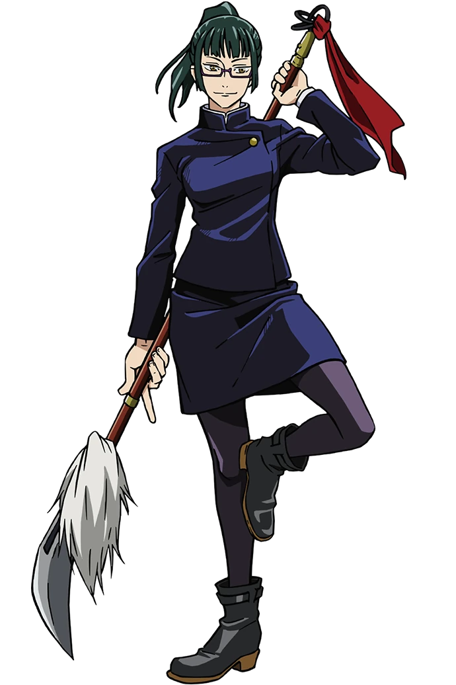

Yuji Itadori
Satoru Gojo
Nobara Kugisaki
Maki Zen'in

Toge Inumaki
| Name | Age | Height | Role |
|---|---|---|---|
| 
Yuji Itadori |
16 | 5'7" (170 cm) | Main Protagonist |
|  Satoru Gojo |
28 | 6'3" (192 cm) | Mentor and Sorcerer |
|  Nobara Kugisaki |
16 | 5'4" (162 cm) | Sorcerer and Yuji's Friend |
|  Maki Zen'in |
17 | 5'6" (167 cm) | Sorcerer and Fighter |
| Toge Inumaki |
17 | 5'9" (175 cm) | Sorcerer with Cursed Speech |